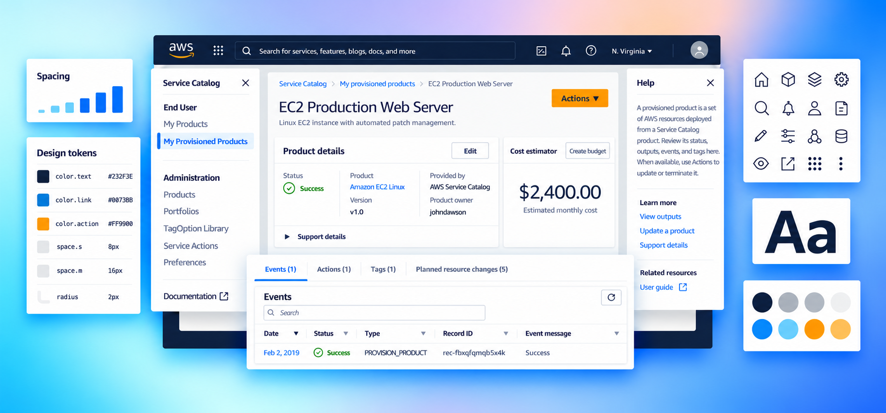
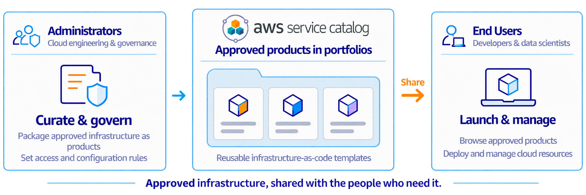
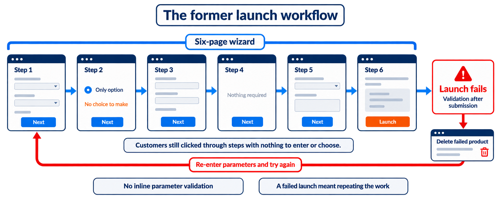
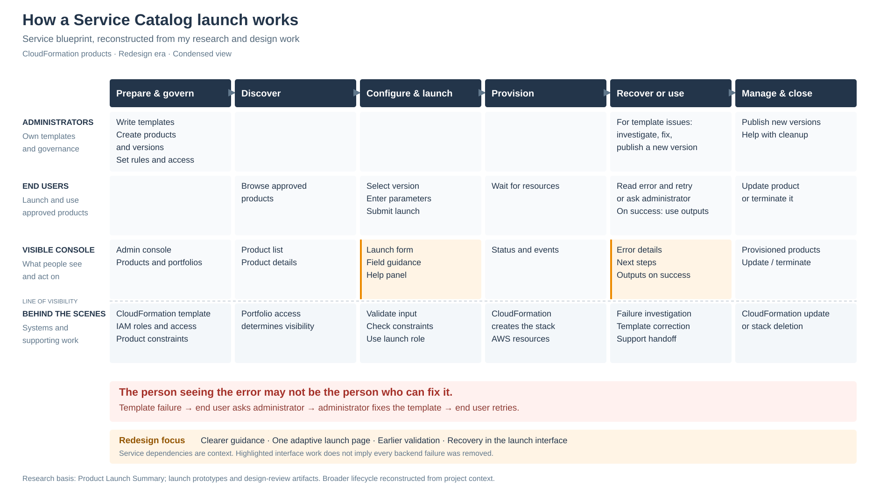
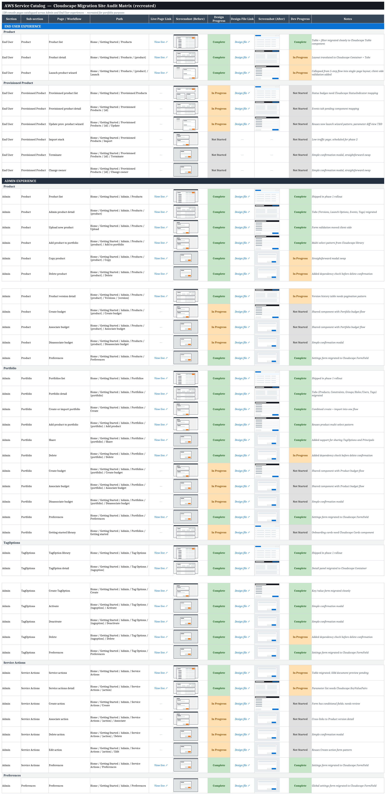
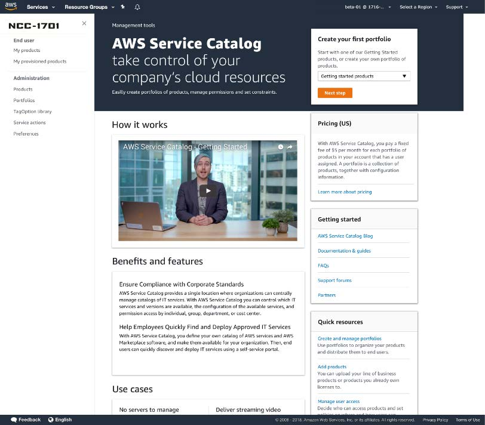
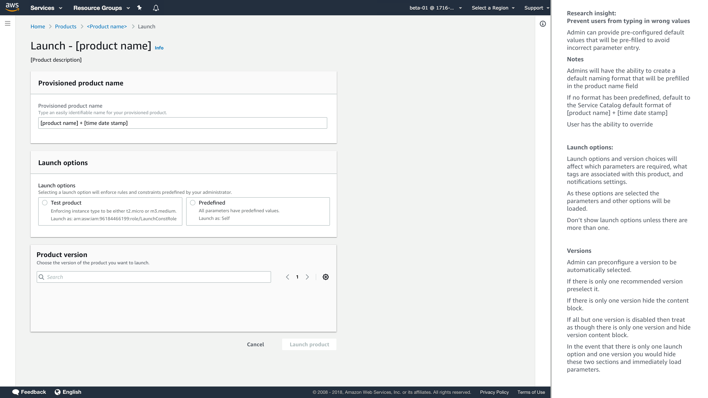
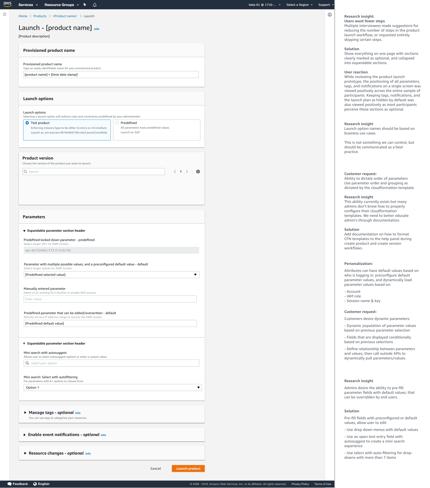
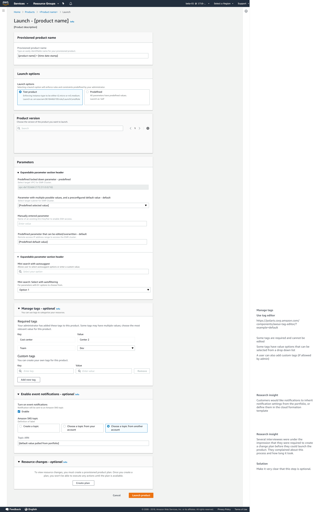
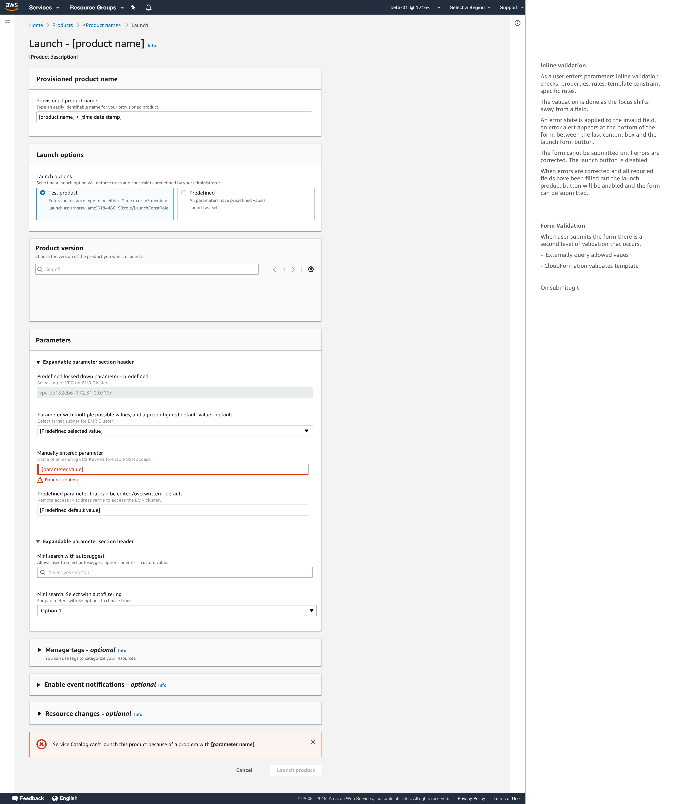

In the interface
Brief explanations of the page, content blocks, and parameter requirements help customers keep moving.
AWS Service Catalog · Console & Product Launch Redesign

AWS asked its service consoles to move to the Cloudscape Design System and Development Framework. For Service Catalog, that meant migrating 128 pages built on two older design systems while preserving every feature and the public APIs customers depended on.
Customers used the console to learn the service, but the interface offered little guidance. Launch research showed that unclear parameter requirements and validation after submission led to failed launches and repeated data entry. I pushed to expand the migration scope, organized a writing sprint, and partnered with the front-end team to improve parameter guidance, introduce client-side validation, and redesign recovery. In the 90 days after release, console satisfaction rose from 63% to 73%.
Service Catalog helps cloud governance teams give people access to approved infrastructure. For the CloudFormation products in this project, administrators wrote templates, packaged them as products and versions, and governed access through portfolios. End users discovered approved products and launched resources without needing to write the infrastructure code themselves.
The console had to give administrators depth and control while helping people with less AWS experience get their work done.

Navigation, tables, actions, and terminology varied across the console. Moving to a new design system meant deciding which patterns could translate directly and which needed more attention.
The product launch workflow was the clearest problem. Every product went through a six-page wizard, including pages with nothing required. It asked for parameters before the product version, even though the version determined which parameters existed. Errors surfaced after submission and could leave customers starting again from a blank form.
Those inputs came from templates written by administrators. A product might ask for two values or dozens. The redesign had to handle both without changing what the underlying service accepted.

A launch depended on more than the person filling in the form. The administrator defined the product, its inputs, and access. Service Catalog presented those choices, and CloudFormation provisioned the resources. When something failed, the end user could see the error without having the authority or knowledge to fix its source.
That handoff mattered to the redesign. We needed to explain what people were being asked to do, catch input errors earlier, and help them understand when recovery required an administrator. The blueprint below reconstructs those dependencies from my research and design work.

On smaller screens, scroll the blueprint horizontally to explore the supporting layers.
I partnered with our UX researcher to plan and run discovery. The launch research included eight administrator interviews, followed by seven prototype interviews. Three findings shaped the work.
| What we learned | Design response |
|---|---|
| Customers used the console to learn Service Catalog. | Wrote explanations in the interface, help panel, and documentation. |
| Customers brought different kinds of expertise. | Kept expert controls available while explaining unfamiliar concepts. |
| Failed launches were the primary pain point in the launch research. | Expanded launch design to improve parameter guidance, add client-side validation, and support recovery. |
One finding challenged my consumer design instincts: customers preferred dense tables and one comprehensive page. They needed to scan, compare, and act without clicking through a series of screens. I kept that density and used progressive disclosure to make the depth manageable.
I took the discovery findings to leadership and made the case to redesign launch during the migration. The front-end team supported the change. Leadership weighed the longer timeline and another round of usability testing. I argued that carrying the biggest customer problem into the new system would leave us with the same work to do later. We agreed to expand the scope.
To keep 128 pages moving, I built a migration matrix and sorted patterns into direct translations, adaptations, and redesigns. I coordinated reviews with the central Cloudscape team and phased delivery: administrator pages first, then end-user pages, with customer feedback and beta releases informing each phase.

Customers were learning the service through an interface that offered little explanation. I organized a writing sprint, using our migration matrix to assign sections to the subject matter experts who knew those features best. I worked with them to write brief explanations of each page and content block, guidance for parameter fields, help-panel content, and updated documentation.
Our strategy was “taste, snack, meal.” The interface gave customers enough to keep moving. The help panel offered more detail. Online documentation provided the full explanation, with a clear path from one level to the next.
Brief explanations of the page, content blocks, and parameter requirements help customers keep moving.
Contextual help explains unfamiliar concepts without taking customers away from the task.
Links lead to the complete explanation when customers need more detail.
I defined shared patterns for navigation, hierarchy, tables, actions, and help, then applied them across the console. Tables stayed information-dense because customers needed to scan and compare. Consistency meant they could move between tasks without relearning where things lived.

I worked closely with the front-end team to replace the six-page wizard with one adaptive page. Launch options and product version came before parameters, so the page could load the relevant inputs. We kept parameters together and collapsed optional sections, including tags, notifications, and resource changes.
The design removed choices that did not need to be made. When there was only one launch option or version, customers could move straight to the parameters. The same structure accommodated a simple product or a multi-resource application.

| Versions | Created time | Type | |
|---|---|---|---|
| v1.0 | Aug 2nd 2018 09:05:15 UTC… | CLOUD_FORMATION_TEMPLATE |


The previous launch flow had no client-side parameter validation. Customers could complete and submit the form before learning that an input was invalid. A failed launch could require deleting the product and manually re-entering its parameters.
We revised interface labels and descriptions to explain what each parameter required, where to find its value, and which format to use. I worked closely with the front-end team to introduce client-side validation, giving customers feedback before they submitted the launch. Clearer instructions and earlier validation worked together to prevent avoidable failures.

Administrator-defined values could be locked, supplied as editable defaults, or offered as choices. Manual inputs needed clear guidance and feedback next to the field.
The validation design paired the field error with a form-level message, helping customers locate the problem before trying to launch again.
Flag invalid inputs when customers leave a field, while the value and its context are still in front of them.
Check allowed values and validate the CloudFormation template before provisioning. Return actionable errors for correction.
The recovery design offered Relaunch after a failed launch, returning customers to the form with their parameters retained and editable.
A failure in an administrator’s CloudFormation template still required the administrator to investigate and correct the source. Preserving parameter values reduced repeated work; it did not remove that dependency.
I created design artifacts and click-through prototypes and partnered with our UX researcher to plan and run usability studies. Seven administrators explored the prototype. They valued inline validation, less repeated data entry, and a single page with optional sections collapsed. End users were not available for this round, so these findings reflected administrators’ perspectives on the people they supported.
We iterated on parameter grouping during the research. The final three participants responded positively to keeping parameters together, including prefilled values. This gave us a clearer direction while leaving direct end-user validation as a gap.
Console CSAT within 90 days of release, placing Service Catalog in the top 10 across AWS consoles.
Positive customer feedback on the redesigned console.
Average weekly stacks launched through the console in the eight weeks after release, an increase of approximately 11%.
Clearer parameter instructions and client-side validation helped prevent avoidable launch failures before submission. Recovery improvements reduced repeated work in the launch interface. Failures originating in a template still required help from the administrator who owned it.